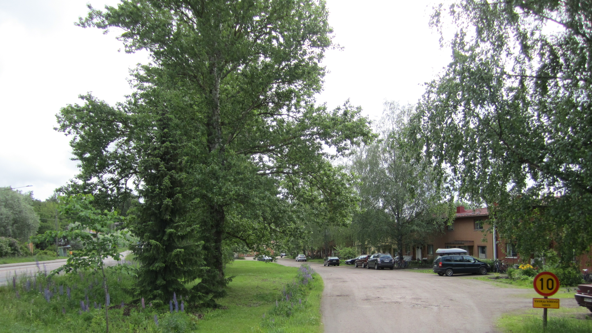

| Länteen |
Etelään |
Itään |
index |
A53 |
Jorvas toimii yhtymäkohtana jossa raideliikenne etelään eli kohti Tallinnaa että liikenne kohti itää eli Helsinki ja liikenne kohti länttä eli Tukholma yhtyy.
Jorvas toimii myös maalikenteen yhtymäkohta, oikeastaan jo tänään, jossa liikenne idästä eli Helsingistä, liikenne lännestä eli Karjaalta ja autosukkulaliikenne etelästä, Virosta ja Tallinnasta, yhtyvät.
Varsinainen autoliikenne etelään toteutetaan siten että henkilöautot ajetaan autokuljetusvaunuille ja autokuljetus vaunut ajetaan junana Tabasalun asemalle Viroon tiheällä vuorovälillä. Tätä autokuljetusta kutsutaan tässä esityksessä (auto-) sukkulaliikenteeksi. On olellista että Jorvakseen rakennetaan tehokasta autokuljetusvaunujen lastausjärjestelmää koska (mahdollisesti) kuljetettavaa on aika paljon. On myös oletettu että autot kuljetukseen tulevat joko Jorvaksentietä tai kehä III kautta ja autot etelästä jatkavat matkansa, kun ne on saatu lastattua pois sukkulaliikenteestä, käyttäen samoja valtatietä, eli 51 (Jorvaksentie) ja 50 (kehä III).
Tällä hetkellä Jorvas ja sen ympäristö ei ole kovin tiivisti rakennettu joten uusrakentamiseen on hyvät edellytykset. Työpaikkojen nähden niin liikenne antaa täysin uusia mahdollisuuksia ja asetta lähialueelle uusia haasteita. Varsinaisen Porkkala-tunnelin rakennusvaiheen aikana louhintajätteet kuljetetaan Jorvakseen mutta ei ole mitään syytä sulkea pois vaihtoehtoa että luohintajätteet jatkavat matkansa itään tai länteen. Pohjoinen on myös mahdollinen mutta tällöin vain autokuljetuksena. Varsinainen Porkkalan niemi on kovin haavoittuva joten louhintajäte on saatava pois niemeltä.
Meluhaitta on näissä suunnitelmissa varteenotetava haaste. Melua syntyy sekä lisäntyvästä raideliikenteestä, tieliikenteestä ja varsinaisesta toiminnasta lastauksineen. Miten meluhaitat aiotaan lieventää on haaste suunnittelulle niin että nykyiset ja tulevat asukkaat silti aina viihtyvät vehreässä Jorvaksessa.
